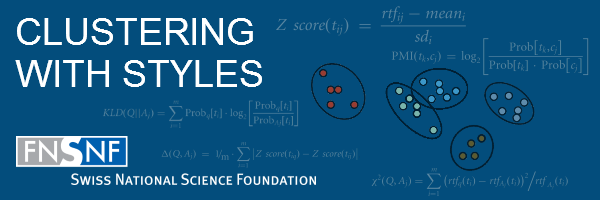

about
I am a third year PhD student in the Computational Linguistics group at the Computer science department of the Université de Neuchâtel supervised by Prof. Jacques Savoy. My research focus is on the design, implementation, and evaluation of text clustering algorithms based on stylistic features. The project "Clustering with Styles" is part of the Computational Linguistics and Stylometry Studies.
I received my Bachelor of Science in Computer Science (cum laude) from the University of Bern, Switzerland. I got the Swiss Joint Master of Science in Computer Science (summa cum laude) of the Universities of Bern, Neuchâtel, and Fribourg.